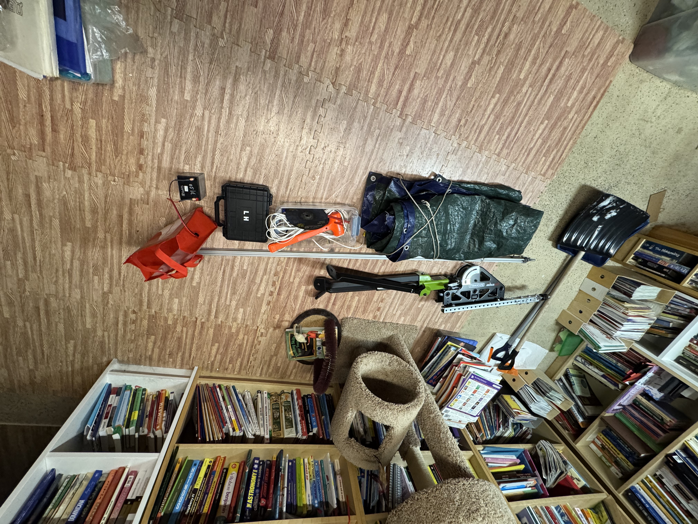

Supernova Year 2 (2025-2026)
Again the same note that this documentation was made AFTER the year ended.
This year had many progressions as compared to the first year. We learned that in principal, the design does work, but there are numerous issues we ran into that we have to address. First off, the rubber-band design with the push rod is not the best way to achieve separation between the two rockets. The other idea we've had is to use springs around the circumference of the transition instead, allowing for cleaner separation and making sure the parachute does not get stuck since it is stored in the bottom half of the body tube. Early iterations of our rocket had issues with slanted trajectories, electronics working unexpectedly, and the coupler not separating properly. To solve these issues, we made these major adjustments. This is a simple list of the major things we changed and improved upon.
Spring adjustments
Our original coupler used three springs in parallel, but this yielded inconsistent separation results. We decided to up the number to six small springs nested inside six larger springs. This increased the K value of the system, and the smaller springs helped prevent the pegs on the top of the coupler from getting caught on the larger springs.
video of test mechanism in action. The transition is upside down here, but the separation would work similarly when write side up due to Newton's 3rd Law and similar masses between top and bottom halves. I type a command to rotate the servo on my laptop, and the bottom half (pink) jumps away from the top half (green).
Rotation surface adjustment
The original surface upon which the bowtie rotated was flat, but we found a slanted surface provided a cleaner and more consistent separation. The slanted surface had the additional benefit of being able to fine-tune the distance of the couplers when locked, as it acted as a pseudo screw mechanism.
Servo switch
The original plastic servos we used had trouble rotating and overcoming the torque applied by the springs (typical 9g hobby servos). We switched to a 9 kg/cm servo to solve this issue, slightly increasing weight but significantly increasing torque.
Electronics container & snap-fit
We CADed an electronics container with a snap-fit design to protect our sensors during flight and provide consistent readings, as we had had issues the previous year with electronics jostling around inside of the body tube and connections being broken.
We found the components/parts we used online, sorting by specs and compatibility. When parts didn't work, like the teensy 4.1 malfunctioning in the cold or the electronics breaking on impact we researched the issue and bought a replacement. Using a wiring diagram was an easy way to keep track of connections. Some hardships were that with a circuit with so many connections we moved on to using a breadboard to organize power connections, since they kept disconnecting when we wrapped the wires together. Some improvements we might make in the future is making a custom PCB of the electronics and just soldering the servo on.
Main code changes/improvements
When writing the code, we focused on making it easy to iterate on previous programs by using functions to compartmentalize parts of the program. The whole program runs on a 30 ms loop, executing a different program depending on the state of the program (awaiting liftoff, post-separation). The main rate limiter is the frequency at which the sensor gives new data, which we experimentally determined to be about 20 ms. While we considered using the internal INT pin on the sensor to tighten up timing, we decided it was not worth it since we'd have to adjust the sensor software. Initially, we used rough time-window velocity approximations to predict apogee. However, this method was too inaccurate because conditions changed rapidly in flight (wind bursts, motor fuel finishing, and boosting the rocket up), so we moved on. Next, we thought of using linear regression to estimate where the apogee would be early on. Yet, due to the issues mentioned before, this approach tended to overestimate by around 10 meters. Therefore, we decided on using the Kalman filter. Given the accuracy of the velocity in the model we used for it, the Kalman filter became our final choice.
Total Flights:
We were able to get in 10 flights this year in addition to our qualification flights. This is a HUGE improvement to the previous years 3 TOTAL, which included two qualification flights and one test flight.
Organization
In the previous year, we had very few launches as aforementioned. In part this was due to our terrible organization and time management, but additionally we did not have our own launch rail nor did we have a comprehensive list of all items needed for launch. This year, we changed this around by having our own custom launch rail and a 'launch box' with all the necessary equipment.
